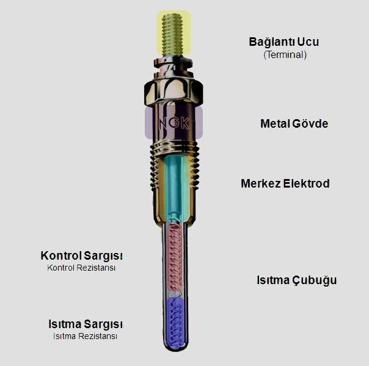

Bildiğiniz gibi dizel motorlarda hava yakıt karışımı bujiler vasıtasıyla değil, sıkıştırılan ve ısınan havanın üzerine enjektörler vasıtasıyla yakıt püskürtülmesiyle yanar. Mazot, yanma odasındaki sıkıştırılmış havanın üzerine püskürtüldüğünde yanması için sıcak havanın 700-900 °C‘lik bir sıcaklığa sahip olması gerekir.
Ancak motor ilk çalıştırılacağı esnada yanma odası soğuk olduğu için, sıkıştırılan havanın sıcaklığı püskürtülen mazotu yakmaya yetecek sıcaklığa erişmez. Dolayısı ile dizel motorlarda ilk çalışma esnasında yanma odasının ısıtılmasına ihtiyaç duyulmaktadır. Motor çalışmadan önce yanma odasını ısıtan parçaya kızdırma bujisi (ısıtma bujisi) denir.
Kızdırma bujisi; aracın ilk çalıştırılması esnasında soğuk olan yanma odasını ısıtarak motorun daha kolay çalışmasını sağlar.

Kızdırma bujilerinin ortalama 100.000 km ömrü vardır. Ancak bu biraz da sizin aracı çalıştırmanıza göre değişecektir. Örneğin kızdırma ikaz ışığı sönmeden aracı çalıştırmak gibi bir alışkanlığınız varsa bujinin ömründen yersiniz.
kızdırma bujisi arızalıdır. Kızdırma bujisi arızalanmışsa aracınızı hemen bir servise götürerek bozuk olan bujileri değiştirtmelisiniz.
Kızdırma bujisinin erkenden bozulmasına yol açar.